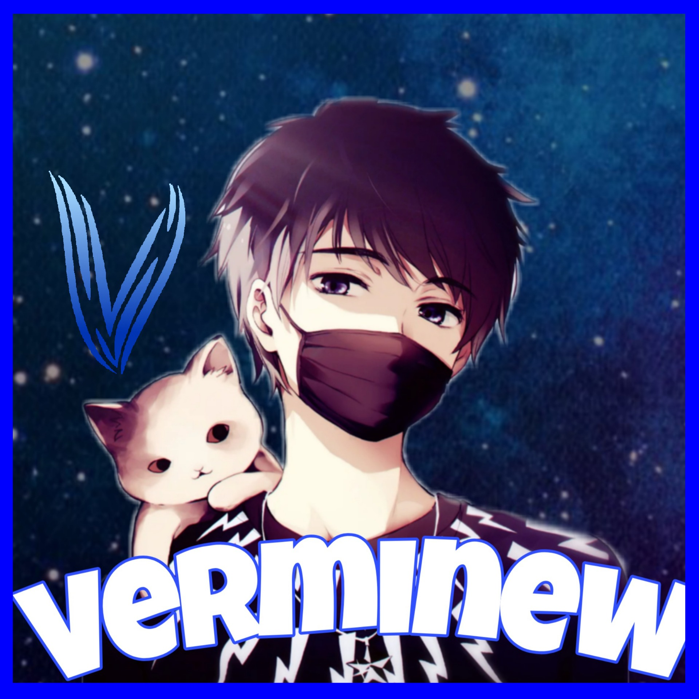

Programistyka i retro muzyka są moją pasją.
Cześć, tu Vermi! - młody programista z pasją i chęcią rozwoju w zakresie developmentu.
Mam 17 lat. Moja ksywka jest połączeniem dwóch części - "ver", które odnosi się do słowa "version" w języku angielskim, oraz "mi", które reprezentuje moje imię. Całkiem proste :)
Interesuję się szerokim spektrum języków programowania, w tym C++, HTML, Javascript, CSS, Python, Batch, Bash i Processing. Jednym z moich ulubionych projektów były sieci neuronowe, które pozwoliły mi na stworzenie gry NeuralSnake- klasyczny wszystkim znany komórkowy „wąż”, ale ze szczyptą chęci do uczenia się. W sumie to jesteśmy w tym aspekcie do siebie podobni :3
Ponadto stworzyłem już kilka prostych gier opartych na własnym autorskim silniku. Jedna z moich ulubionych jest „CubeDash”- gra, w której musisz unikać statkiem lecących w twoją stronę zabójczych sześcianów! Wiem brzmi groźnie! Jakby ktoś spojrzał z boku to jest to na prawdę prosta gra, ale cieszmy mnie to, że potrafiłem skonstruować ją od samego początku do końca własnoręcznie. Możliwość tworzenia czegoś swojego od zera daje mi zdecydowanie największą satysfakcję, bo wtedy czuję że nam pełną wolność twórczą.
Poza tym chcę nie tylko uczyć się nowych języków programowania, ale także rozwijać moje umiejętności tworzenia aplikacji desktopowych na Androida oraz iOS. Poza tym, jestem zajawiony tworzeniem muzyki 8-bitowej i 16-bitowej. Jest to moja ulubiona forma relaksu i spedzania wolnego czasu. Szczególnie lubię tworzyć coś swojego, a jak coveruje to zazwyczaj soundtracki z różnych gier. Jestem pełen energii i zaangażowania, aby rozwijać swoje umiejętności i dzielić się nimi z innymi.
To jest właśnie to, co czyni mnie takim, kim jestem - Vermim, programistą z pasją.

Jako VermiNew, jestem pasjonatem programowania i tworzenia rzeczy za pomocą
kodu. Moja przygoda z YouTubem zaczęła się kilka lat temu, kiedy zacząłem dzielić się swoimi projektami i
doświadczeniem z innymi.
Na moim kanale YouTube, można znaleźć różne filmy dotyczące programowania, od krótkich tutoriali po
bardziej skomplikowane projekty - które też pojawią się w przyszłości.
W szczególności interesują mnie sieci neuronowe i ich zastosowanie w różnych dziedzinach, takich jak gry i
aplikacje.
Moim celem jest nie tylko dzielenie się wiedzą i doświadczeniem, ale także inspirowanie innych do
rozpoczęcia swojej przygody z programowaniem.
Zawsze staram się być dostępny dla moich widzów i
odpowiadać na ich pytania, a także dostarczać im wartościowe i interesujące treści.
Jeśli jesteś
zainteresowany programowaniem i chcesz dowiedzieć się więcej o moich projektach,
serdecznie zapraszam na
mojego kanału na YouTube.
Jestem pewien, że znajdziesz tam coś dla
siebie!
Jako pasjonat tworzenia muzyki 8-bit lub 16-bitowej.
Muzyka ta jest rodzajem elektronicznej muzyki, która powstała w czasach komputerów osobistych i jest
inspirowana muzyką z gier komputerowych.
W moim wykonaniu, staram się uzyskać autentyczne brzmienie,
korzystając z syntezatorów dźwięku i specjalnych narzędzi, takich jak trackery, aby stworzyć kompozycje, które
są pełne melodyjnych linii i chwytliwych rytmów.
Moja muzyka jest często inspirowana klasycznymi grami i ich
motywami muzycznymi, a także współczesnymi gatunkami, takimi jak vaporwave i synthwave.
Tworzenie muzyki
8-bit lub 16-bitowej jest dla mnie formą ucieczki i sposobem na wyrażenie moich emocji i pomysłów.
To również
pozwala mi poćwiczyć moje umiejętności w programowaniu i produkcji dźwięku, co jest dla mnie niezwykle
ekscytujące.
Jestem dumny z moich projektów i mam nadzieję, że
będzie on inspiracją dla innych, którzy również chcą tworzyć muzykę 8-bit lub 16-bitową.
Dziękuję serdecznie platformie Github za hostowanie mojej strony. Jestem wdzięczny za ich stabilną i niezawodną platformę, która pozwala mi dzielić się moimi projektami z całym światem. Jestem podekscytowany tym, co jeszcze będę mieć okazję zrobić z wykorzystaniem tej platformy.
Przejdź do github